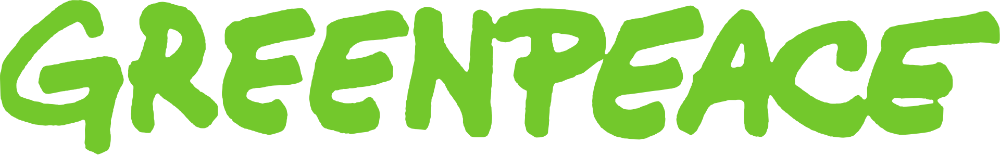
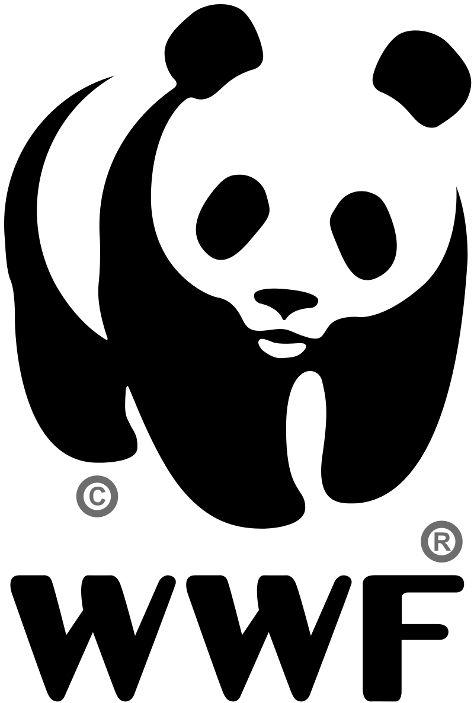
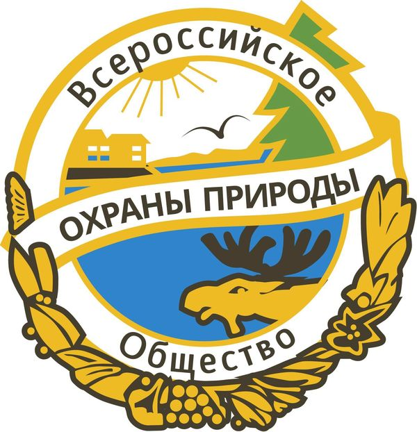
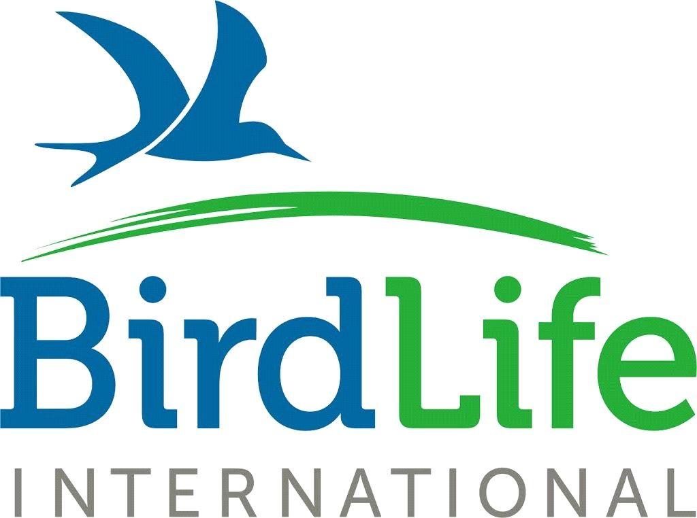

Пять самых известных международных экологических организаций
29 ноября 1924 года считается датой рождения Всероссийского общества охраны природы, ставшего одним из мировых эколидеров. Вспомним и других влиятельных борцов за спасение природы.
Гринпис (Greenpeace)
«Гринпи́с» — международная независимая неправительственная экологическая организация, созданная в 1971 году в Канаде.
В поле зрения организации находятся такие проблемы, как глобальное изменение климата, сокращение площади лесов от тропиков до Арктики и Антарктики, чрезмерный вылов рыбы, коммерческий китобойный промысел, радиационная опасность, развитие возобновляемых источников энергии (ВИЭ) и ресурсосбережение, загрязнение окружающей среды опасными химическими веществами, устойчивое сельское хозяйство, сохранение Арктики.
В соответствии с годовым отчётом за 2015 год, у «Гринпис» более 42 000 000 онлайн-сторонников по всему миру, 36 000 активных волонтёров и 3 300 000 человек поддерживают работу организации личными пожертвованиями.

Всемирный фонд дикой природы (WWF или World Wildlife Fund)
Всемирный фонд дикой природы (англ. World Wildlife Fund, сокр. WWF; в настоящее время официально называется Всемирный фонд природы (англ. World Wide Fund for Nature), только в США и Канаде сохранено старое название) — международная общественная организация, работающая в сферах, касающихся сохранения, исследования и восстановления окружающей среды. Это крупнейшая в мире независимая природоохранная организация с более чем 5 миллионами сторонников во всём мире, работающая в более чем 100 странах, поддерживающая около 1300 природоохранных проектов во всём мире.
Миссия Всемирного фонда дикой природы заключается в предотвращении нарастающей деградации естественной среды планеты и достижении гармонии человека и природы. Главная цель — сохранение биологического разнообразия Земли.

Всероссийское общество охраны природы (ВООП)
Еще в начале 1924 года сотрудники отдела охраны природы Наркомата просвещения РСФСР загорелись идеей создать природоохранное сообщество, но не как правительственную структуру, а как добровольное Общество охраны природы.
Основной заботой Обществоа в послевоенные годы стало озеленение советских городов и охрана водоемов, в том числе таких всемирно известных, как озера Байкал и Селигер. Так, в начале августа региональное отделение Иркутской области предложило горожанам собраться вместе и потратить несколько часов на то, что очистить от мусора берега красивейшего водоема в мире. К слову, сегодня ВООП имеет свои представительства в каждом регионе страны.

Международный Зелёный Крест
Еще одна природозащитная организация, основанная в нашей стране. О ее создании Михаил Горбачев объявил в июне 1992 года на саммите Земли в Рио-де-Жанейро. Хотя эту идею он озвучил еще за несколько лет до этого момента, в 1990 году: тогда глава СССР в рамках Глобального форума по окружающей среде и развитию вынес на обсуждение идею основать аналог Международного Красного креста, который будет решать не медицинские, а глобальные экологические проблемы, выходящие за рамки компетенции отдельных стран. В 1993 году советская организация объединилась со швейцарским «Миром Зелёного Креста», так и сформировав в 1993 году известный нам сегодня Международный Зелёный Крест.
BirdLife International
В 1922 году британские орнитологи основали организацию, которая специализировалась на защите птиц и охране мест их обитания. Прошло больше семидесяти лет, общество получило свое нынешнее название и превратилось в международную организацию, которая сегодня насчитывает сто двадцать одно представительство в разных странах мира. К слову, обязательным условием при присоединении нового государства к «защитникам птиц» является соблюдение принципа «одна стран – одно представительство».
Сама международная организация в 2007 году запустила крупный проект, основной целью которого стало спасение вымирающих видов птиц. К слову, сегодня BirdLife International возглавляет член японской императорской семьи, принцесса Такамадо.
